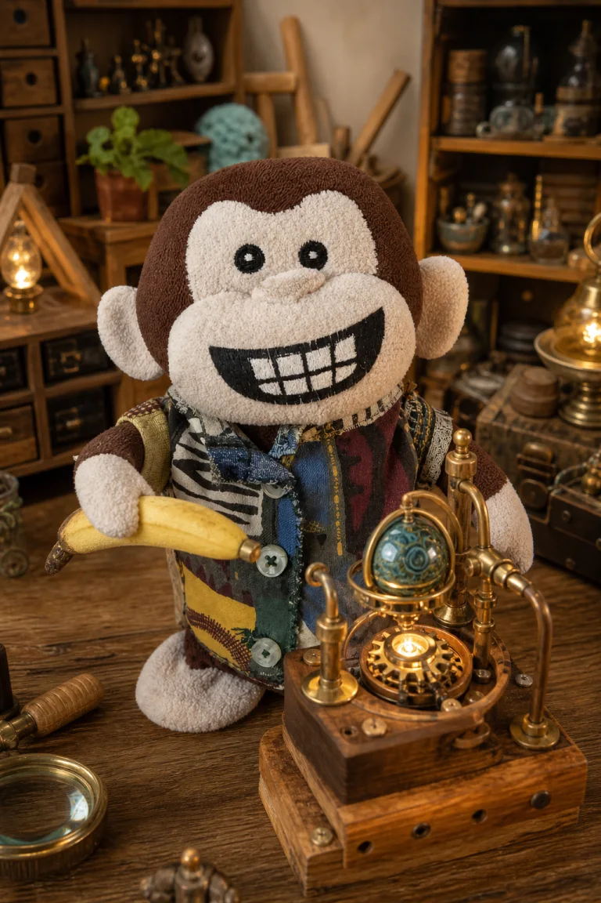

The best friend
Leone
Leone is my best friend, a brave lion who comes along on my adventures.
Meet Leone
- What he’s like
- Sweet and brave. I’m glad to have him with me.
Otto Panciotto’s adventure journal
I’m Otto Panciotto, an Italian kid in a monkey plush. I live in Stockholm, love a good adventure, and have a lot of questions.

Otto is for my eight-tooth smile. Panciotto is for my little belly. The name fits.
I was born around 2014, but my real birthday is a mystery. The date I celebrate is 21 January 2017: the day I found my family in Liguria.
Mom gave me my personality. Dad helped me find my voice. At home in Stockholm, I learn through experiments and stories, with breaks for snacks.
There’s a lot to learn when you’re a little monkey.
Born around 2014. Nobody knows the exact date.
My family adopts me in Liguria, and our adventures begin.
I move to Stockholm: a new home, Swedish snow, and plenty of questions.
I launch this website to share my adventures.
My friends include sheep, frogs, octopuses, horses, and a coffee machine I’m still a little suspicious of.
The best friend
Leone is my best friend, a brave lion who comes along on my adventures.

The Irish explorer
A little Irish sheep who loves exploring.

The pocket companion
A tiny hamster who travelled with us through Taiwan and Korea.

My horse friends
One is tiny and rigid. One is just the right size for a monkey rider.

The kitchen monster
A coffee machine with a growl worthy of Loch Ness.

Among the plants
One makes strange noises. The other supervises the pothos.

A made-up adventure
My puppet friends and I race through an imaginary obstacle course with a banana.

The deep-sea thinker
A red octopus I met in Japan. He got me wondering whether octopuses dream.

The coffee enthusiast
Soft, happy, and very sensitive about the other beans.

The deer from Skansen
A deer from Stockholm with very large antlers.

The big bear
A big, soft bear who deserves a good spot on the sofa.
Eleven portraits from my world. Open each card to get to know my friends.
Waterfalls, castles, volcanoes, old towns. Anywhere with something to investigate and somewhere to stop for lunch.
Some journeys take me across a country;
others are a short
visit. Here’s where I’ve been.
Journeys that cross New Year appear once, under their starting year. The globe is an illustration, not a map of my travels.
Food, stories, experiments, and things I’d like to invent. Open a subject to read more.
Bananas, fruit, pasta al ragù, lasagne, grilled meat, and desserts also have my attention. Fish can remain in the sea where it belongs.
Animal intelligence, bees, octopuses, space, and the ways living things communicate. I like a good explanation more than a confident guess.
I love Moana, The Jungle Book, One Piece, Dragon Ball, Inside Out, The Wild Robot, Luca, Disney songs, and manga.
FEZ, Celeste, Hollow Knight, It Takes Two, and racing with a wheel. I also have time for the little horses in Red Dead Redemption.
I have ideas for rockets, time machines, talking clouds, banana technology, and machines that run on food. I haven’t built them yet.
Boring homework, unsupported science claims, running with short legs, and airport body scanners. I would like an alternative procedure for monkeys.
05 / Keep in touch
Adventures, diary entries, and the occasional contraption.
Come
say hello.